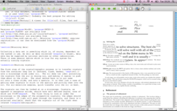

TeXworks on GNU/Linux (Ubuntu)
TeXworks on Windows 7
TeXworks on Mac OS X
Jonathan Kew, Stefan Löffler, Charlie Sharpsteen
The TeXworks project is an effort to build a simple TeX front-end program (working environment) that will be available for all today’s major desktop operating systems—in particular, MS Windows (XP/Vista/7), typical GNU/Linux distros and other X11-based systems, as well as Mac OS X. It is deliberately modeled on Dick Koch’s award-winning TeXShop for Mac OS X, which is credited with a resurgence of TeX usage on the Mac platform.
To provide a similar experience across all systems, TeXworks is based on cross-platform, open source tools and libraries. The Qt toolkit was chosen for the quality of its cross-platform user interface capabilities, with native “look and feel” on each platform being a realistic target. Qt also provides a rich application framework, facilitating the relatively rapid development of a usable product.
The normal TeXworks workflow is PDF-centric, using pdfTeX and XeTeX as typesetting engines and generating PDF documents as the default formatted output. Although it is possible to configure a processing path based on DVI, newcomers to the TeX world need not be concerned with DVI at all, but can generally treat TeX as a system that goes directly from marked-up text files to ready-to-use PDF documents.
TeXworks includes an integrated PDF viewer, based on the Poppler library, so there is no need to switch to an external program such as Acrobat, xpdf, etc., to view the typeset output. The integrated viewer also supports source/preview synchronization (e.g., control-click within the source text to locate the corresponding position in the PDF, and vice versa). This capability is based on the “SyncTeX” feature developed by Jérôme Laurens, and supported by both the pdfTeX and XeTeX programs in TeX Live and other current distributions.
You can get binaries for the following platforms:
Note that TeX Live (since version 2009) and MiKTeX (since version 2.8) both include TeXworks for MS Windows, and the MacTeX release (since version 2009, corresponding to TeX Live 2009) includes TeXworks for Mac OS X. For Linux, prepackaged binaries may be available through the usual channels for your distribution or are currently in preparation.
If no binaries are available for your platform, you can grab a copy of the sources and build TeXworks yourself.
A few screenshots are available showing the TeXworks 0.4 release running on the three major supported operating systems (click images to open full-size versions):
TeXworks on GNU/Linux (Ubuntu) |
TeXworks on Windows 7 |
 TeXworks on Mac OS X |
If you are using a stable version of TeXworks, "A short manual for TeXworks" should be included automatically. Despite its name, it is quite extensive and should provide all the necessary information for normal usage. This manual normally is accessible from the "Help" menu (and possibly also from other locations, such as the Microsoft Windows start menu).
"A short manual for TeXworks" in its latest version is also available on Google Drive.
For script authors, the primary resource is Paul A. Norman's TeXworks Scripting Information page.
There is a mailing list available for discussion of any topics related to the TeXworks project. You can search the list archives online.
TeXworks development is currently hosted at Google Code; this is where most resources and the latest source code can be found. Experimental precompiled development snapshots for Windows, Mac OS X, and Ubuntu can be found on Google Drive and Launchpad.
Presentations introducing TeXworks have been given at recent TeX conferences. Video recordings from the TUG 2008 and TUG 2010 conferences are available online, as well as an earlier one from BachoTeX 2008, thanks to River Valley Technologies. The PDF slides (1.5MB) used for the TUG 2008 presentation are also available.
Odd-numbered series (0.1, 0.3, ...) are development series. Numerous snapshots are made available during the evolution of TeXworks, and feedback from those brave enough to use these experimental versions is greatly appreciated!
Apart from numerous fixes, improvements, and new features, this series has one major focus: scripting. Scripts allow users to easily customize and extend TeXworks. Current uses range from simple formatting over automation tasks to the implementation of new dialogs and auto-completion methods. Currently, the primary resource for scripts is Google Code. For those interested in learning how to write scripts, Paul Norman has compiled some excellent documentations.
This series includes:
No new features or major code changes will be made in the 0.4.x series, but there may be new "point releases" as necessary to fix specific bugs.
This series marks the initial release of TeXworks as a stable product. It includes:
TeXworks is constantly evolving and improving. Several major additional features are planned for future releases; some issues fairly high on the priority list include:
Some of these features, and perhaps others, will be implemented in the current development version (0.5.x), leading to a third release series designated 0.6 once a suitable set of features is considered stable.
We expect development priorities to be guided by user feedback as well as developer interest. A rough, tentative roadmap is available on Google Code.
TeXworks is a free and open source software project, and you are invited to participate; some suggested ways are listed below, but this is not exhaustive. Note that most of these items do not require a programmer! Many other skills are just as vital. Some ways to contribute:
The TeXworks project arose out of discussions at several recent TUG meetings, and initial development has been generously supported by TUG’s TeX development fund and its contributors, and by UK-TUG.
Special thanks to Karl Berry for his encouragement and support; to Dick Koch for showing us the potential of a clean, simple TeX environment for the average user; to Alain Delmotte for writing a manual; to Paul A. Norman for constantly evaluating (not only) scripting and documenting it; and to many others who have contributed ideas, suggestions, translations, and patches.
$Date$